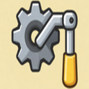
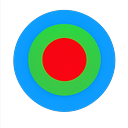
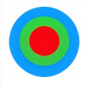

Oliver Ernster
Principal engineer: decision systems, backend architecture and authority design.
Start Here

Crank the CodeThe Decision Architecture thesis and writing
GitHub
github.com/oernster, the full collection of projects
Selected Work
Fulcrum
Decision Architecture incarnate: the model made playable
LatencyLab
Design-time latency exploration for event-driven systems

MMSPA multimedia evolution of RSS (draft specification)

MeridianA calm MMSP, RSS and Atom feed reader
Local-first email, calendar and contacts client for the desktop
Forward-looking, offline desktop budget planner
Listen to any book, hands-free, on any operating system
One-click Windows audio device switching with saved profiles
International desktop calendar with world holidays and a clock
UK train times with integrated weather and astronomy
o7 Debrief
Turn your Elite Dangerous journal into a shareable session debrief
E:D Colonisation Assistant
Automatic colonisation and fleet carrier tracking from your journal
SnarkAPI
Condescension as a service: one endpoint, no feelings spared